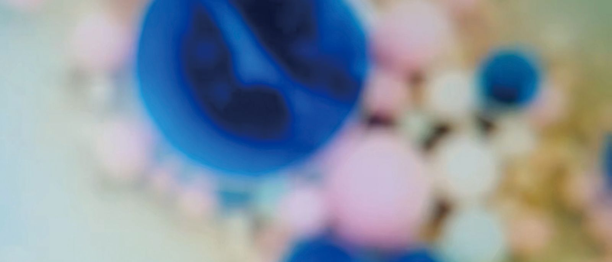
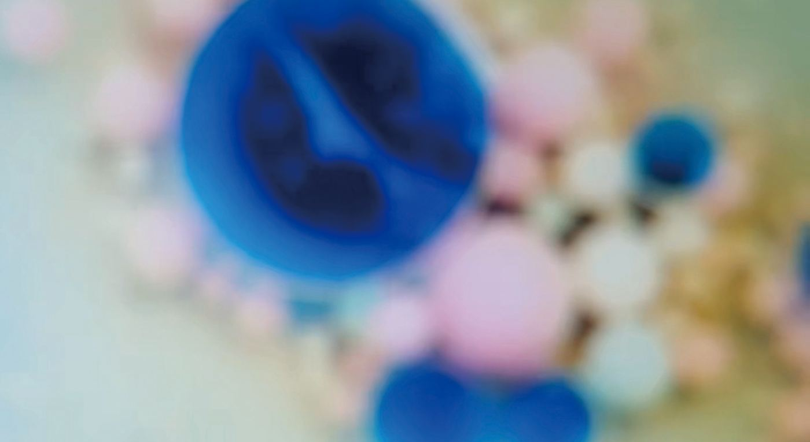
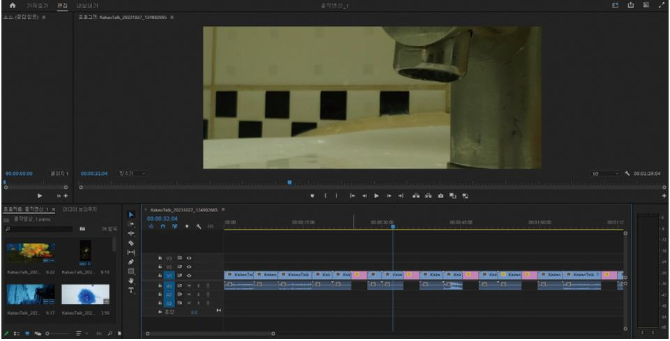
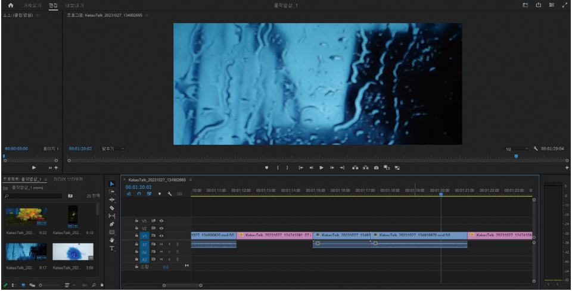
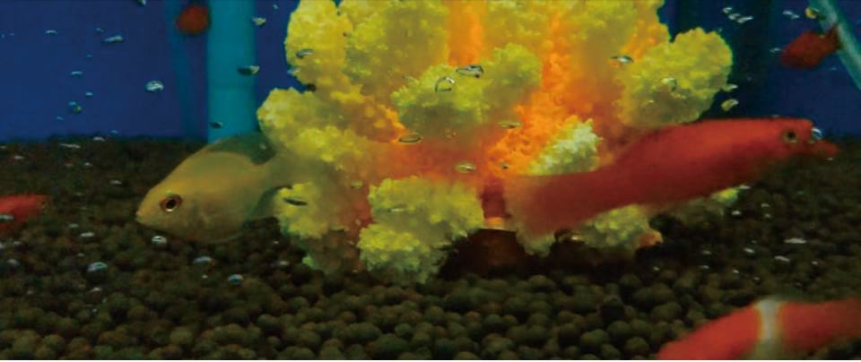
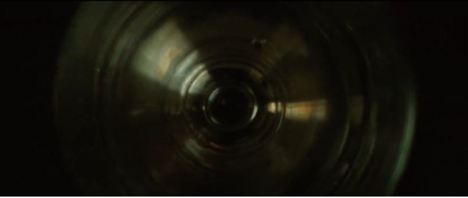
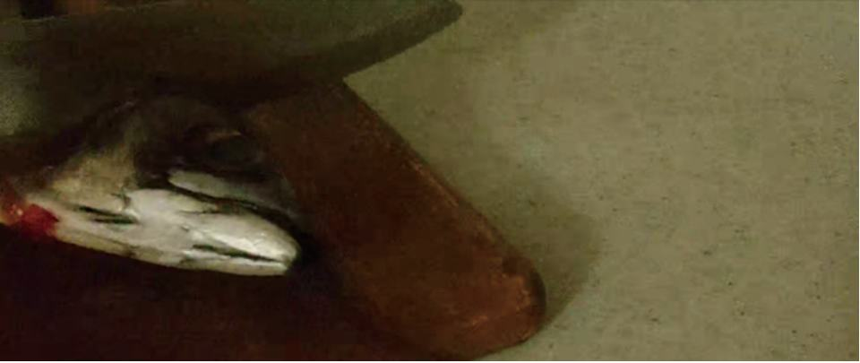

这是一部表现随水的声音与形态而变化的情绪的短片。
- 学生
- Kim Sieon
- 领域
- 影像
- 形式
- 短片
- 片长
- 01:29
- 类型
- Drama
- 画面比例
- 16:9
- 展览
- 2023 毕业作品展「The Wonder Garden」
剧情简介
作品包含对在韩国出生的外国人的思考，用影像表现了主人公随水的形态与声音而产生的情绪变化。
...开始在我头顶上盘旋。接着突然开始往我身上拉屎。我为了躲开鸟屎拼命奔跑，跑进了市区附近的一座体育馆，躲开像雨一样落下的鸟屎，藏起身来。海鸥们又悠然地朝海边飞去。
体育馆里非常昏暗，好像已经倒闭了一样。确认海鸥们离开后，我想尽快离开这个可怕的地方。可是，身后好像传来了叫我的声音。虽然明明没有声音，但它确实是在叫我。我想走进里面仔细听听那个声音。可是体育馆里面只听得到正在维修的天花板上滴下的水声和游泳池排水的声音。我怀疑自己是不是出现了幻听，于是又迈步准备出去。往外走的时候，水声实在太刺耳，我再一次回头看向昏暗的体育馆内部。那里隐隐约约站着一个西方男人。
我以为是住在附近的人。因为这是在突然变得安静的街区里第一次遇到的人，我高兴极了，一口气跑了过去。可是随着离那个男人越来越近，我感觉到了："这不是人。"我感到一阵寒意，停下脚步，又冲出了体育馆。
走出体育馆，眼前又是平日里的街区。成群结队走向港口的俄罗斯人，从外面就戴好泳镜、和朋友们蹦蹦跳跳走进体育馆的孩子们，买了青花鱼当晚饭菜、正往家走的大婶们，那个亲切的街区又回来了。我把在体育馆里发生的事忘得一干二净，飞快地跑回了家。
那天夜里，从天花板上滴下的水突然停了。想到终于可以把大盆从狭小的家里拿走，我很高兴。但因为已是深夜，我决定明天再收拾。就在我睡着的那一刻，长了霉的地方开始一抽一抽地蠕动起来，好像有什么东西要钻出来，看起来就像某个人腐烂的心脏。今天也睡不着。和朋友们玩得很开心，还做了平时不做的作业，又一个人在澡堂里玩得很尽兴，明明非常累，却怎么也睡不着。这时，房间角落里长霉的地方又开始一滴一滴地滴水。霉斑渐渐变大，颜色也越来越黑。然后，渐渐浮现出一张女人的脸，是一个西方人模样的女人。我害怕极了，想要逃跑，身体却动弹不得，也发不出声音。...
创作意图
作品并没有直接表现对在韩国出生的外国人的歧视，而是想随着对水的恐惧逐渐加深，展现主人公遭受歧视的过程。之所以一开始不直接表现，是想呈现这样一条路径：在韩国出生的外国人认为自己是韩国人，但周围的人并不这样认为，而他们在成长过程中逐渐意识到这一点。我想把这样一个漫长的故事，用简洁而具有概念性的影像，带着情感表达出来。
剧照





